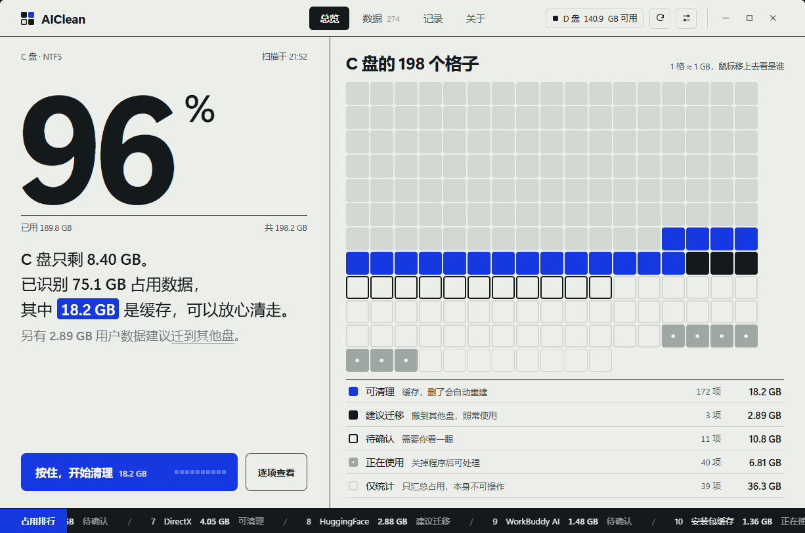
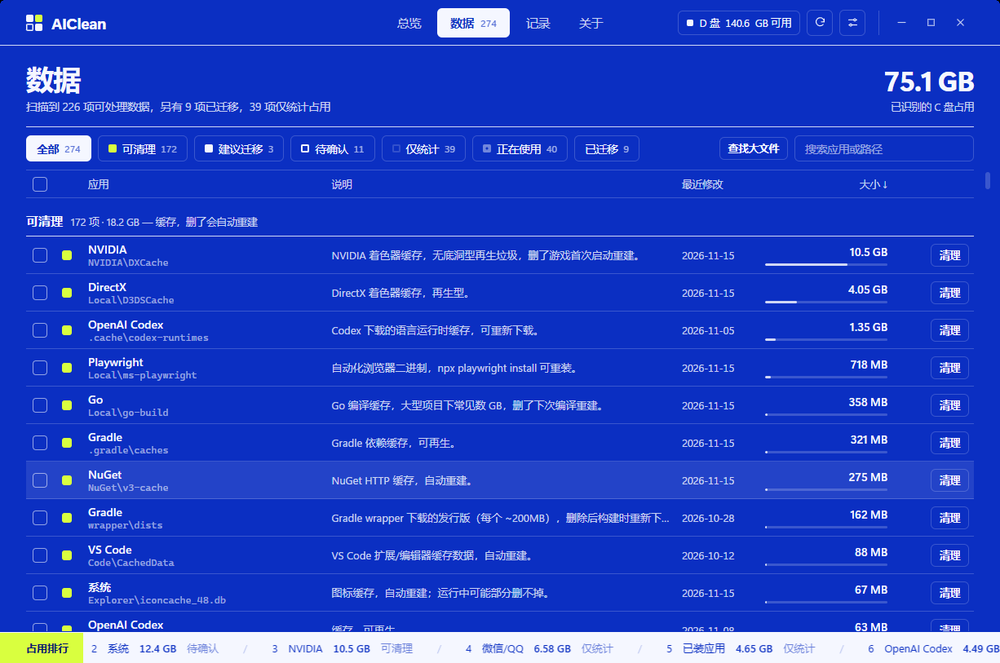
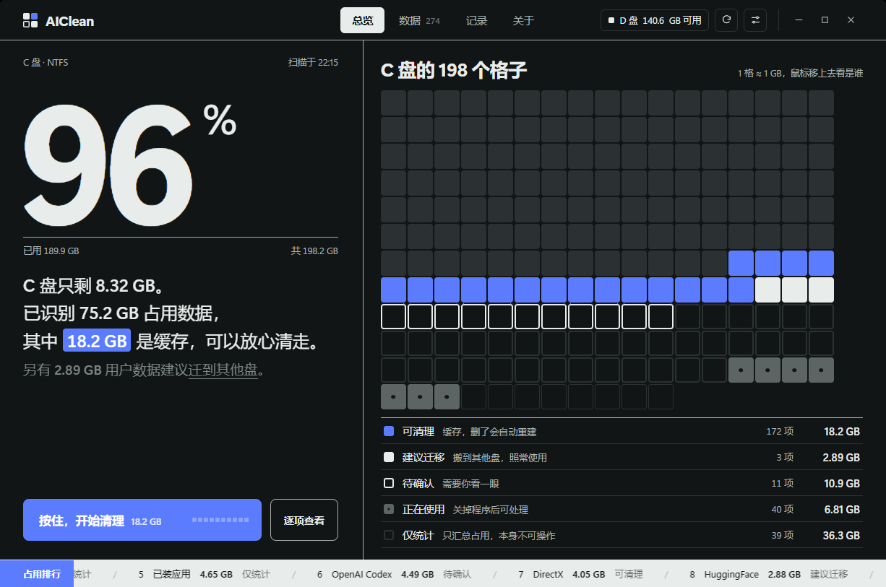

STEP 01
扫描整盘
启动即自动扫描，格子图实时画出谁占了空间。识别不出的也标注"未识别"，不会漏报。
01 · HOW IT WORKS
STEP 01
启动即自动扫描，格子图实时画出谁占了空间。识别不出的也标注"未识别"，不会漏报。
STEP 02
每一项标注可清理 / 建议迁移 / 待确认 / 正在使用 / 仅统计，并写清"这是什么、删了会怎样"。
STEP 03
缓存按住即清，软件会自动重建；大体积数据一键迁到其他盘，原位置留链接，照常使用。
STEP 04
清完的格子变回可用色。清理、迁移、迁回全部记入操作日志，随时回查。
02 · FEATURES
围绕 C 盘空间这一件事：看得清、清得掉、迁得走、查得回。
F.01
整盘占用画成格子图，一格约 1 GB。谁占了多少、是什么性质，颜色直接告诉你；鼠标悬停看归属应用和体积。
F.02
228 条内置规则打底；规则库之外的 Electron 缓存启发式发现；≥300MB 大文件猎手，含重复文件指纹比对。
F.03
复制 → 校验 → 备份 → 建 Junction → 验证，五步任一失败自动还原。对软件来说路径没变，随时一键迁回。
F.04
接 Windows 计划任务，只清低风险缓存，频率可设。默认关闭，开启时会先弹窗说明清理范围。
F.05
删不掉的进残留区，可重试可恢复，超期自动清除。清理、迁移、迁回、删备份——每次操作全量留痕。
F.06
自移除计划任务、开机自启、数据目录与注册表残留。选择保留的数据生成桌面清单，注明位置。
03 · NUMBERS
228+
内置清理规则
还可用 rules.json 自定义，自有规则优先生效
300MB+
大文件猎手阈值
超过即被盯上，重复文件按内容指纹比对
3
套界面主题
雾白 / 克莱因蓝 / 夜墨，软件里随时换
0
次联网请求
完全本地运行，不收集任何数据
04 · THEMES
雾白护眼 / 克莱因蓝 / 夜墨，软件里随时换。



05 · SAFETY
所有不可逆操作都有前置确认和回退路径；删不掉的、看不准的，宁可不碰。
06 · DOWNLOAD
AIClean.exe4.6 MBWindows 10/11 64 位免安装需要时提示提权